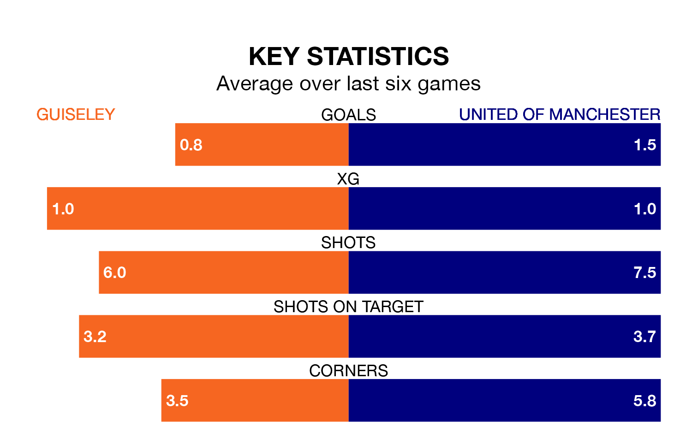

Guiseley welcome United of Manchester to Nethermoor Park on Saturday looking to pick up points to end their five-game losing streak.
Guiseley's struggles have left them with just three points from their last six Northern Premier League matches, while their opponents have earned nine from a possible 18.
In the last 10 years, Guiseley and United of Manchester have played each other on six occasions. Guiseley won two of them, United of Manchester three, and they drew once.
On average, the Lions scored 1.8 goals and F.C. United 1.7 in those matches.
Their last meeting was on November 18, when United of Manchester won 3-2 at home.
With 52 goals in 37 games so far this season, United of Manchester are scoring at below the league average rate with 1.4 goals per game. And they are conceding more than average, letting in 70 goals at a rate of 1.9 per game.
Guiseley, meanwhile, are above average scorers, with 1.7 goals per game, compared to a league average of 1.6. They have conceded 1.6 goals per game.
F.C. United are 15th in the table after 37 games, of which they have won 14 and drawn four, earning 46 points.
The Lions are three places ahead of the away team in 12th, with 16 wins and seven draws putting them on 55 points.
Guiseley's last match was on April 13, a 2-1 loss against Matlock Town.
United of Manchester beat Bamber Bridge 3-0 last time out, also on April 13.
Updated: 11:31 (UTC), 15/04/24